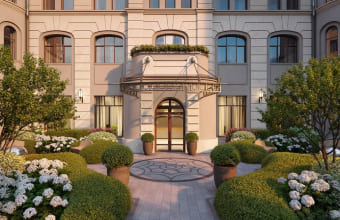
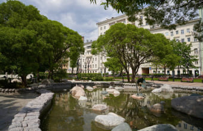
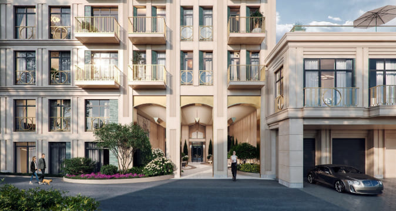
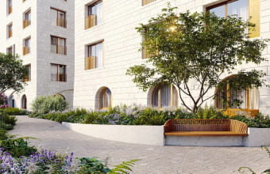
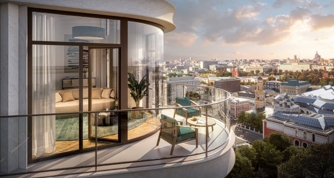

Информационный центр
-


Sminex приступил к фасадным работам в клубном доме «Чистые Пруды»
12 апреля 2024 Чистые прудыДевелопер реставрирует кирпичную кладку наружных стен здания, построенного в 1915 году по проекту архитектора Отто фон Дессина. Завершить фасадные работы планируется в декабре этого года. Клубный дом «Чистые Пруды» расположен в глубине тихого Потаповского переулка, в 50 метрах от знаменитого одноимённого пруда. Sminex проводит бережную реконструкцию здания, чтобы сохранить его изысканную ...
-


«Дзен». Главные места и секреты Чистых прудов
8 апреля 2024 Чистые прудыЧистые пруды хранят дух исконной Москвы и при этом обладают всеми преимуществами мегаполиса. Здесь есть свои тайны, знаковые места и современные пентхаусы.
- Как Чистые пруды стали чистыми и при чём тут британцы?
- Что Булгаков переместил с Чистых прудов на Патриаршие в романе «Мастер и Маргарита»?
- Как доходный дом начала ХХ века получил новое содержание и стал клубным? ...
-


Высокий спрос привёл к росту цен на элитную недвижимость Остоженки
4 апреля 2024В 2023 году объем предложения элитных квартир в районе Остоженки составил 29,9 тыс. кв. м, а к концу I квартала 2024-го он уменьшился до 26,8 кв. м. Сейчас здесь продаются четыре строящихся дома. На фоне уменьшения предложения средняя стоимость кв. м в них за прошедший год увеличилась на 23% — с 2,5 до 3,1 млн рублей. Самые дорогие лоты — пентхаусы — выросли в цене на 16%, с 4,3 до 5 млн рублей ...
-


Sminex создаёт самый близкий к Кремлю всесезонный двор-сад
4 апреля 2024 Ильинка 3/8В коллекции клубных особняков «Ильинка 3/8» благоустройство занимает 1700 кв. м. Девелопер представил концепцию двора-сада, в которой гармонично соединяет исторические детали XIX века и современные технологии комфорта. В приватном пространстве жители наслаждаются цветущим круглый год садом — всего в ботанической коллекции больше 6600 растений. Территория клубных особняков в 160 метрах от Красной площади начинается ...
-

Видео. Ювелирное воссоздание барельефов «Ильинки 3/8»
3 апреля 2024 Ильинка 3/8Грифон, пардус, лев и птица Сирин — существа из славянской мифологии. Они символизируют величие, изящество, благородство и радость. Барельефы с этими волшебными созданиями охраняют покой и благополучие жителей «Ильинки 3/8», создавая неповторимый облик клубных особняков в 160 метрах от Красной площади. Об идее создания артефактов и её воплощении в камне руками иранских мастеров смотрите в новом видео ...
-


РБК. Пять зданий с эффектной архитектурой, которые скоро построят в Москве
3 апреля 2024Редакция «РБК-Недвижимости» заглянула в будущее и выбрала пять новых архитектурных символов, которые скоро появятся в Москве.
- Технопарк со светопрозрачным фасадом в неофутуристичном стиле
- Бионические фасады с окнами, из которых открываются панорамы Кремля
- Музей в стиле необрутализма на территории монастыря
- Школа будущего как из произведений ...